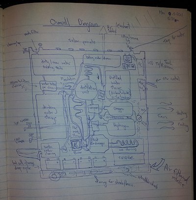

A basic functional diagram lists how each process works with each other. There are optional sections for sewerage, which is pretty dangerous for home DIY stuff so it should probably be left out in any prototype.
Complete Feature List
Solar panels on roof for electricity
Battery packs for storing electricity
240V AC inverter
Chargers / power supplies for all devices (iPad, phones, laptops)
PC with touch screen for control and entertainment
Rain water collection in separate tank
Dirty/Sea water purification
Boiler for hot water, shwoer, steam cleaning
Compressor for air tools, fridge, drying
Heat exchanger for fridge
Cool (10 degree) compartment for food storage (grains)
Oven (optional)
Warm shelf (optional - for serving tray , coffee pot, clothes dryer)
Space heating via warm air outlet
Air Conditioning via cool air outlet
Sewerage Recycling (optional - leave this to engineers)
Methane collection for burner (optional - leave this to engineers)
The component overview to the below shows the parts needed to make the Life Cube work.
{kind=link}
Overall Diagram of how Life Cube works

{kind=link}
All Life Cube Articles
Main Page
Overview
Technical Requirements
Usage